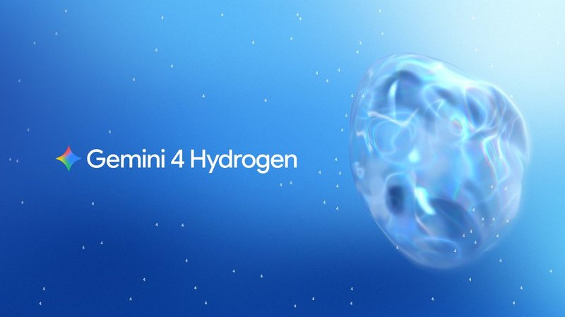
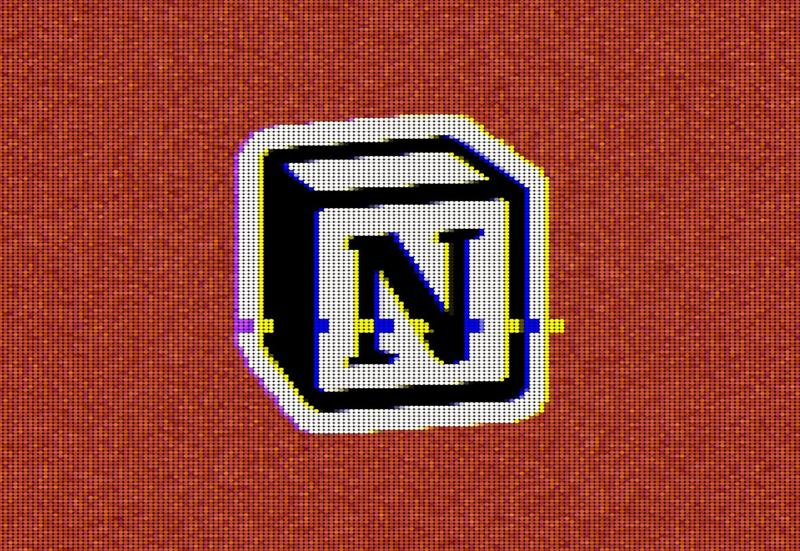

国际重点谷歌发布 Gemini 4 Hydrogen
Introducing Gemini 4 Hydrogen
谷歌发布新一代主力模型 Gemini 4 Hydrogen，主打日常编程与智能体工作流，接替 3.8 Flash，并同步接入搜索等产品
Google 官方博客 · 11-13 02:00
看原文

国际重点Introducing Gemini 4 Hydrogen
谷歌发布新一代主力模型 Gemini 4 Hydrogen，主打日常编程与智能体工作流，接替 3.8 Flash，并同步接入搜索等产品
MiniMax 开源一款生图模型，原生支持 4K 出图，单张成本约两毛钱，开发者可以直接拿来用，进一步拉低 AI 绘图门槛
Introducing Claude Meetings, now in beta
Anthropic 推出 Claude Meetings 测试版，可加入团队视频通话，边开会边做笔记、答疑并生成文档和白板，先向 Team 和 Enterprise 套餐开放。据 Claude 官方 X，已回官网核对
科大讯飞星火语音基座大模型 SparkAudio 1.0 开放 API，支持 99 种语言和 202 种方言，开发者可直接接入
字节旗下豆包工作即日起接入 Kimi、GLM、DeepSeek 等第三方模型，国内 AI 办公产品开始走「多模型」路线
钛媒体实测百度新发布的文心 5.5 Flash Preview，称其在编程、3D 建模、内容创作等场景表现突出，国产轻量模型竞争加剧
Daybreak Defense Factory | AI Vulnerability Remediation | OpenAI
OpenAI 推出两款安全产品：Defense Factory 让 AI 智能体追查代码漏洞并准备补丁供工程师审核，Red Team 负责找漏洞，把前沿 AI 能力用到企业防御上。据 Greg Brockman（OpenAI 总裁）X，已回官网核对（另见 https://openai.com/daybreak/red-team/）
United Airlines blocks AI agents from booking flights, citing cybersecurity risks
United Airlines（联合航空）宣布禁止客户用 AI 智能体预订和管理航班，理由是网络安全风险，AI 代办服务开始遇到平台阻力
US nonprofits sue tech giants to halt AI development
多家美国非营利组织在加州起诉几家科技巨头，要求冻结可能带来「灾难性」风险的 AI 模型训练，AI 安全争议走向法庭
Nvidia CEO Jensen Huang has resigned
英伟达宣布黄仁勋辞去 CEO 等职务，由 CFO 科莱特·克雷斯（Colette Kress）临时接任，英伟达股价大跌，全球 AI 产业受到冲击

国际重点Cyberattack on Fireworks AI allowed hackers to access Notion customers' chat transcripts
AI 推理服务商 Fireworks AI 遭攻击，黑客借此访问了 Notion 客户的聊天记录，这是 Fireworks 两个月内第二次出事，AI 供应链安全再敲警钟
7 吨级大型运投无人机「长鹰-8」完成运输投送试验，验证了大型无人机的物资运投能力
中科宇航自研的力擎一号、力擎二号液氧煤油发动机先后完成关键试车考核，为其后续火箭研制打基础
中国银联与蚂蚁集团推出全功能融合终端，同时支持支付宝碰一下、境内外银行卡和扫码，在西安首发，商户一台机器就能收各种付款
Microsoft's Outlook email hit by new outage
微软 Outlook 邮箱服务再次出现大范围故障，大量用户收发邮件受影响
Google pushes privacy angle as Gemini-powered smartglasses debut starting at $395
谷歌联合三星等品牌推出搭载 Gemini 的 Android XR 智能眼镜，395 美元起，主打录制指示灯、人脸模糊等隐私设计
京东以 13.35 亿欧元完成对德国消费电子零售商 Ceconomy 的收购要约，拿到 59.8% 股本和投票权，中国零售巨头加速布局欧洲
长安汽车拟挂牌转让阿维塔科技 10% 股权，交易价约 32 亿元
海南新组建空天集团，注册资金 100 亿元，加码商业航天等空天产业
US Logs $404 Billion Deficit in First Month of Fiscal Year
美国 2027 财年首月（10 月）财政赤字达 4040 亿美元，财政压力受到市场关注。据彭博 RSS
Yen Jumps in ‘Jittery’ Trading After Hitting 160-Per-Dollar
日元汇率一度跌到 160 兑 1 美元的关键位置，随后在剧烈波动中反弹，市场关注日本是否出手干预。据彭博 RSS
Home sales in the US are at their lowest level since 2016
美国二手房销售环比下降 5.5%，降到 2016 年以来最低水平，楼市在高利率下持续降温
中国地震台网测定，贵州毕节市威宁县发生 4.5 级地震，震源深度 10 公里
京津冀及周边地区出现 PM2.5 污染过程，相关地区空气质量受影响，出行需注意防护
广西来宾忻城「11·10」道路运输事故被自治区安委会挂牌督办
What to know about the Logan Circle shooting in Washington, DC
美国华盛顿特区 Logan Circle 发生枪击事件，造成 1 死 4 伤，嫌疑人自杀，当地治安再受关注
Ebola in DR Congo: Millions of dollars going missing as virus spreads, MSF warns
无国界医生（MSF）称，刚果（金）埃博拉疫情扩散之际，数百万美元防疫资金下落不明，医护人员被欠薪、物资短缺
Kampala school deaths: Ugandan police investigate suspected poisoning
乌干达坎帕拉一所学校四名女生疑似中毒身亡，警方正在调查涉事橙子的来源
于魁智、李胜素领衔大陆戏曲名家赴台演出，两岸戏曲交流再添一场
古陶文明博物馆藏西汉骨签展「未央遗珍」在杭州开展，展出西汉宫廷档案实物
杭州国家版本馆累计接收社会捐赠超 19.5 万册（件）
Duran Duran's Roger Taylor quits Birmingham band over tinnitus
英国乐队 Duran Duran 鼓手 Roger Taylor 因耳鸣病情恶化，遵医嘱退出乐队
Ex-Bond producer named Buckinghamshire film school's president
前 007 系列制片人 Barbara Broccoli 将于明年 2 月接替 David Puttnam，出任位于白金汉郡的英国国家电影电视学院（NFTS）院长
Schools, libraries and parents face 'difficult decision' over David Walliams books
因作家 David Walliams 面临指控，英国部分学校将其童书撤下，学校、图书馆和家长都面临是否保留的艰难决定
Resident Evil Requiem sweeps Golden Joystick Awards
《生化危机：安魂曲》在 2026 金摇杆奖（Golden Joystick Awards）上拿下包括最高奖在内的多个奖项
Epic 商城本周免费送《斗阵骑士 Knightica》，领取后永久保留
物理驱动合作生存恐怖游戏《危险等级》结束抢先体验推出正式版，支持 1–4 人合作，国区售价 40 元，支持简体中文
英伟达发布 GeForce 621.24 驱动，优化《战锤 40000：战争黎明 4》，国产游戏《燕云十六声》新增 DLSS 5 支持
Doom Developer id Software Confirms New Project, Says "We Can't Wait for You to See What We're Working On"
id Software 确认正在开发新项目，将由 Hugo Martin 担任总监
The Game Awards 2026 Will Be Streamed on Disney+
The Game Awards 2026 将新增 Disney+ 直播渠道，Twitch、YouTube 等平台照常播出
Xbox CEO Announces Surprise Firefight Mode For Halo: Campaign Evolved
Xbox 负责人宣布，《Halo: Campaign Evolved》将通过免费更新加入初版没有的 Firefight（火力战）模式